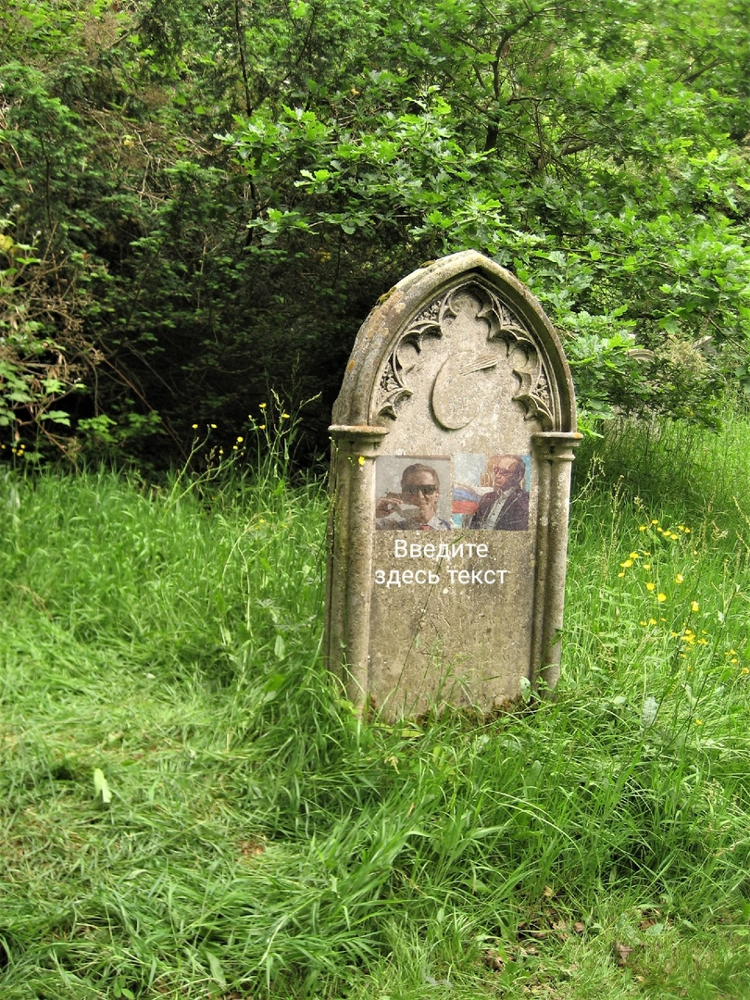

Центр моддинга aoc
Оффицальный
Тут собраны новостные статьи нашего сегмента!
домой
назад
Ужасающая трагедия самолёта бройлер
body>
17 февраля был сбит наш грузовой самолёт Бройлер 747, об это заявила наша редакция в своём оффицальном паблике , также она предоставила видео с трагедии. Самолётом управляли Матвей Топаев и Тамерлан Максименко, Безысход Даниилов, все они не выжили, труппы были найдены только первых двух и похоронены, а последнего не нашли- по одной из версий его съела местная деревня, подумав что он бройлер.
Авария произошла, из-за того что самолёт был сбит недавно найденой ПВО в Северодонецке, об которой сообщила наша редакция в своём паблике . Хотя изначально была версия что клетки для бройлеров сделаны не по госту. Но версии-версиями, однако жизни уже не вернуть.
Вечная Память героям погибших от рук террористов.
| 
|
Похороны Тамерлана Максименко и Матвея Топаева, на которых присутствовала вся команда центра